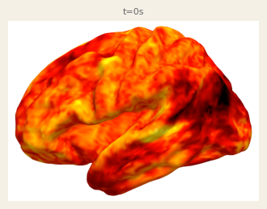

سكينة
Sakina
The neural landscape of Quran recitation
1 · Al-Fatiha — The Opening
36 · Ya-Sin — The Heart of the Quran
55 · Ar-Rahman — The Most Merciful
67 · Al-Mulk — The Sovereignty
112 · Al-Ikhlas — The Sincerity
113 · Al-Falaq — The Daybreak
114 · An-Nas — Mankind
▶ Listen
3D BRAIN · TRIBE V2

TRIBE V2 RENDER · VALIDATION
بِسْمِ ٱللَّهِ ٱلرَّحْمَـٰنِ ٱلرَّحِيمِ
t=0 / 47
Dev Controls
Cam X
-200
Cam Y
20
Cam Z
0
FOV
30
Rotate
OFF
Point Size
1.5
Opacity
0.88
BG
Paper
Dark
Navy
White
Select a surah to begin